One MQTT topic, two gauges and two charts
On my room dashboard I want the latest temperature and humidity at a glance, with half an hour of history below. The sensor publishes both numbers in one message. ARAAMA reads that message through two tags, each with its own JSON field, unit and history.
Broker connection · Temperature · Humidity · Check the four cards
1. Connect the tablet to the broker
You need ARAAMA 0.1.10 on Android, Python 3 and the Mosquitto client mosquitto_pub on a computer, and an MQTT broker both devices can reach. The generator supplies the readings for this exercise. Download the generator and RoomAir panel · ESP32 and DHT22 wiring
To try the finished layout, export your current project in Settings → Projects, then open RoomAir/panel.json from the extracted archive. It already contains four cards. To build them yourself, start on an empty screen in a practice project.
Open Settings → Network. Select Workshop broker in the imported project, or choose + Connection and give it that name. Select MQTT 3.1.1. Replace broker.example with your broker's host name or IP address, without mqtt://. This example uses port 1883 with TLS off. For your own broker, enter its port, TLS setting and credentials. The sample uses a 5 s reconnect delay, 30 s keepalive and 5000 ms timeout. Select Save connection.
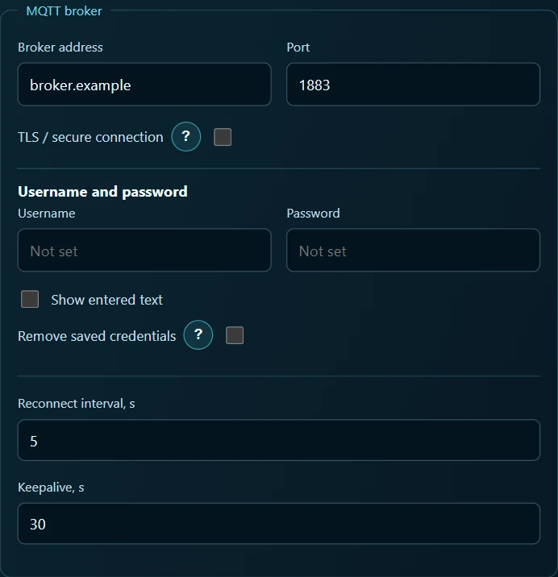
Extract the archive and run this command from the directory containing simulate.py. Substitute the address of the broker you entered on the tablet. Omitting --host prints the samples to the terminal only.
python simulate.py room --host 192.168.1.20 --port 1883
A message arrives on lab/room-air/state every five seconds. To see it, open Settings → MQTT search, select Workshop broker, choose ordinary topics and enter the filter lab/room-air/#. Start the search and expand lab → room-air → state. Look for the numbers temperature_c and humidity_pct. The search accepts a wildcard. Both tags below use the full state topic.
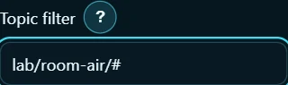
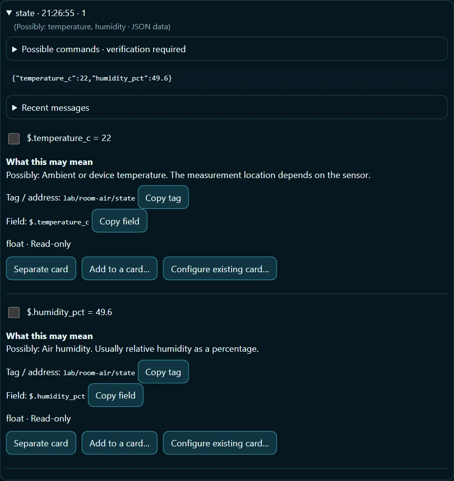
Open the details for a discovered field and use Copy field to copy its JSON path. Paste it into the tag form below. This also works for longer paths from real sensors. The tag names below match the RoomAir file.
2. Air temperature
Tag. Open Settings → Tags → + Tag. Enter Air temperature as the name, Workshop broker as the connection, Float as the variable type, Read only for access and °C for the unit. In the MQTT receive section enter lab/room-air/state, select JSON and enter $.temperature_c as the field path. The value already represents degrees Celsius. Use multiplier 1, offset 0 and a stale timeout of 30 s. Select Save tag.
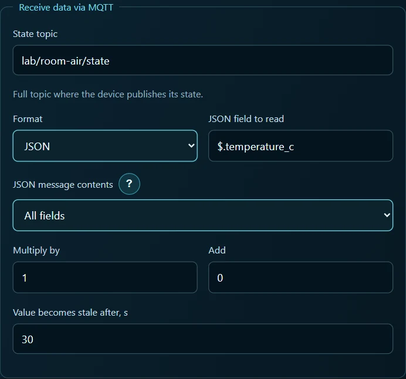
Card 1 — gauge. In the saved tag, go to Used on screens. Select Analog gauge, then Create a card for this tag. Open the new card's parameters and keep the title Air temperature. Under Display scale, enter Min 0, Max 40, unit °C and 1 decimal place. Apply the Min/Max values if the button appears. A sample of 22 should read 22 °C on the dial.
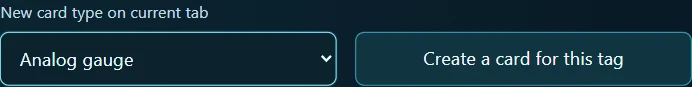
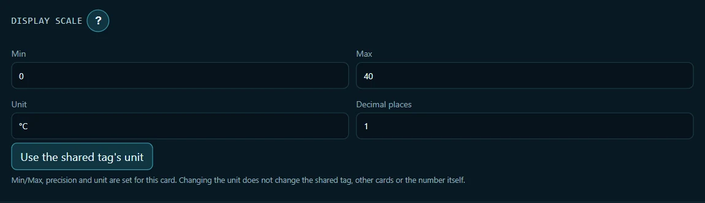
To match the finished panel, select the Neon screen theme in the gauge parameters, set the card colour to cyan and choose the Gradient arc gauge face. The theme applies to the screen. The colour and face belong to this card.
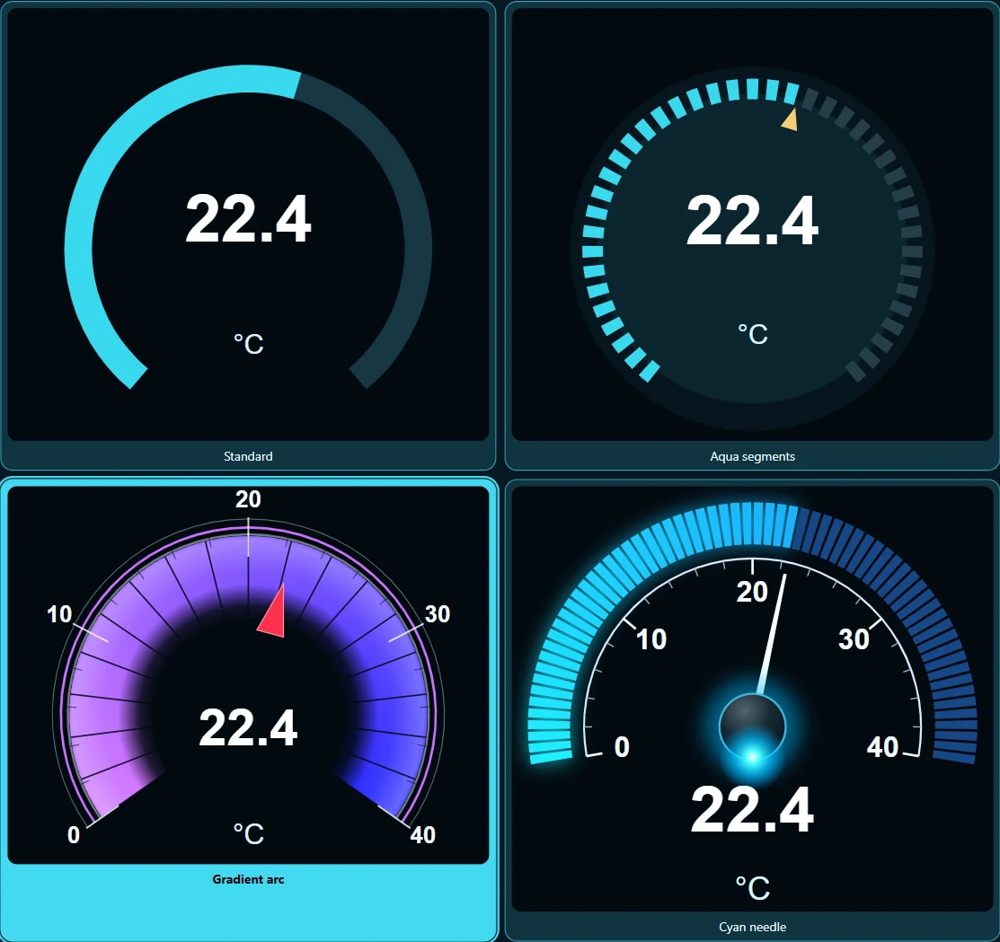
Card 2 — chart. Go back to Tags → Air temperature → Used on screens. Select Trend and Create a card for this tag. In the card parameters, name it Air temperature history. Open the chart's Period and recording, choose Custom period and enter 0.5 hours (30 minutes). For recording, choose On change. Enable the option to keep data between Android sessions and save.

Temperature history. Open Tags → Measurement history and choose Air temperature at the top. Enable history, select On change, enter 24 hours and 500 samples, then save the policy. These are the limits for the tag's session history. The 30-minute display window belongs to the individual chart.
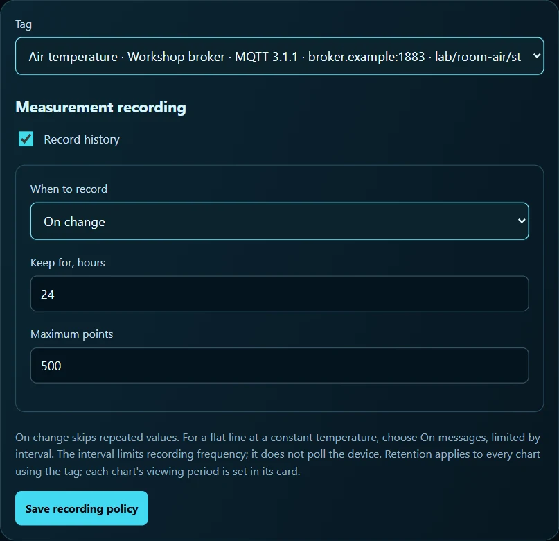
3. Relative humidity
Tag. Open Settings → Tags → + Tag. Name it Relative humidity. Choose Workshop broker, Float, Read only, unit %. Enter lab/room-air/state, select JSON and enter $.humidity_pct as the field path. The generator already reports percent. A value of 49.6 should read 49.6 % on the card. Leave the multiplier at 1, offset at 0, stale timeout at 30 s and select Save tag.
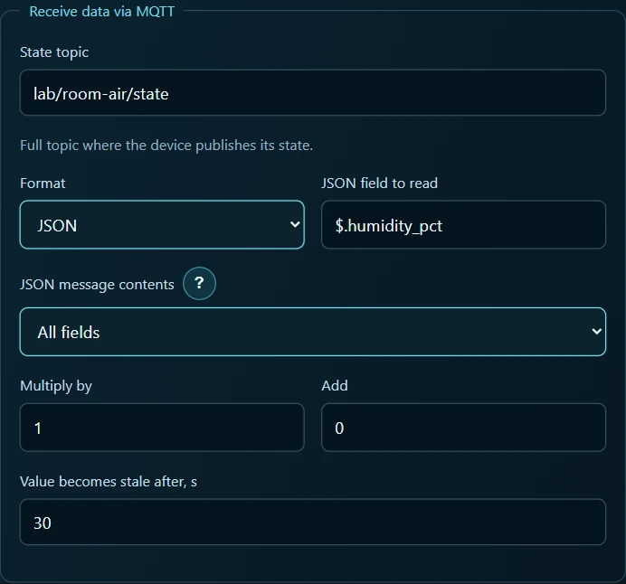
Card 3 — gauge. Open Relative humidity → Used on screens. Select Analog gauge → Create a card for this tag. In the card parameters, keep the title Relative humidity. Under Display scale, enter Min 0, Max 100, unit %, and 1 decimal place. Apply Min/Max if prompted. A reading near 50 % puts the needle halfway across the scale.

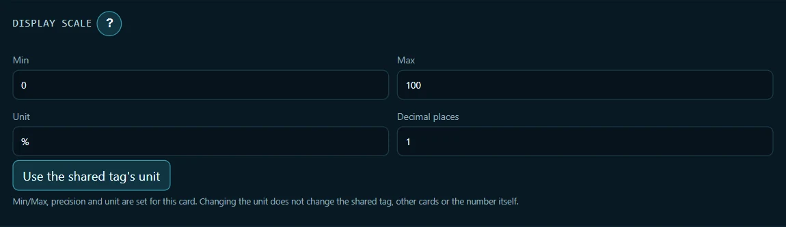
Set the humidity card colour to green and select the Cyan needle gauge face. In the finished layout, temperature occupies the left half of the top row and humidity the right half. In edit mode, drag each card into position and drag its lower corner to resize it. Place the temperature chart across the full width below the gauges and the humidity chart underneath.
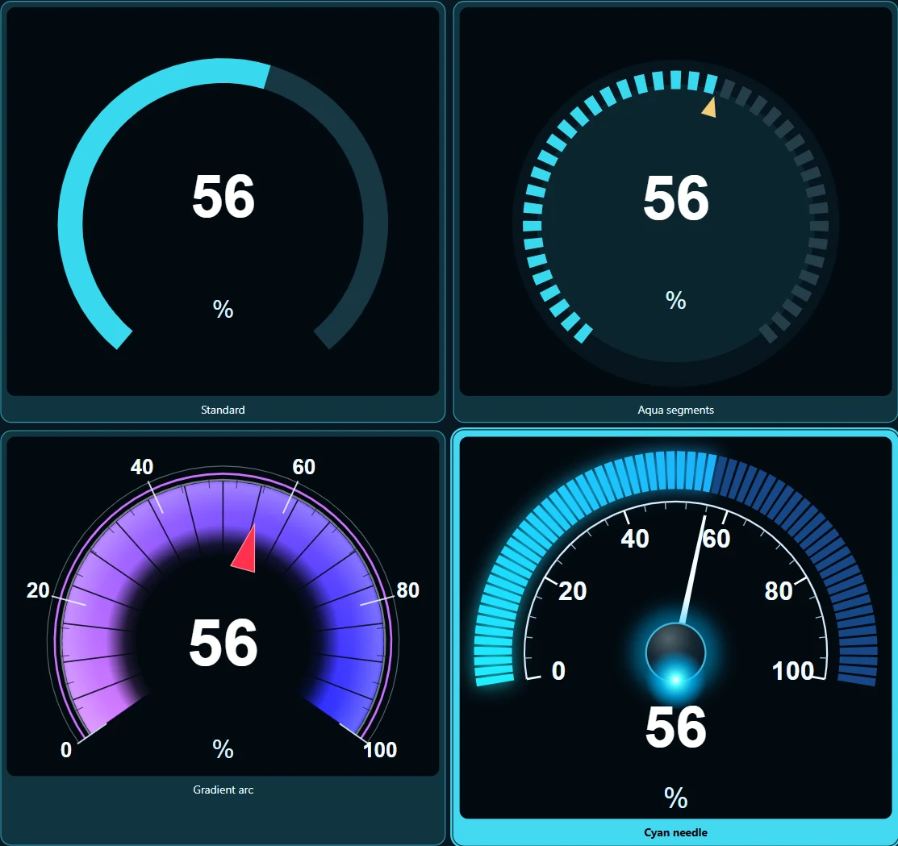
Card 4 — chart. Go to Tags → Relative humidity → Used on screens. Select Trend and Create a card for this tag. Set the title to Relative humidity history. Open Period and recording for this chart, select Custom period, enter 0.5 hours, and choose On change. Enable retention between Android sessions and save.
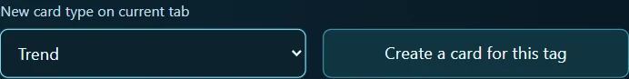
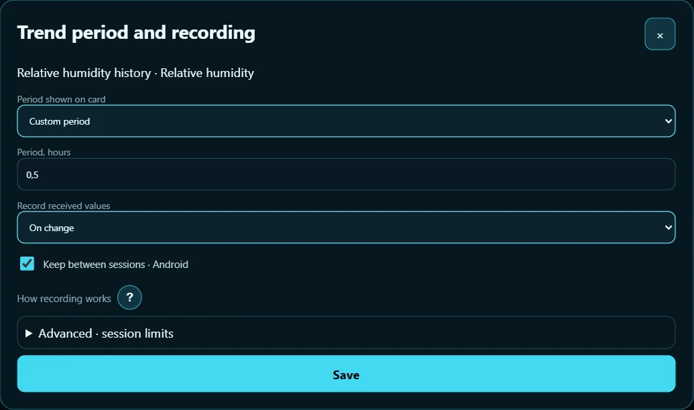
Humidity history. In Tags → Measurement history, choose Relative humidity. Enable recording, select On change, retain 24 hours, and set a maximum of 500 samples. Save the policy. A change in humidity now adds a point to this chart even when the temperature stays constant.
4. Check all four cards
Select Run. Compare the first two messages with the two gauges and the number of points in a fresh session.
| Time since start | Temperature gauge | Humidity gauge | Temperature / humidity points |
|---|---|---|---|
| 0 s | 22.0 °C | 49.6 % | 1 / 1 |
| 5 s | 22.0 °C | 49.4 % | 1 / 2 |
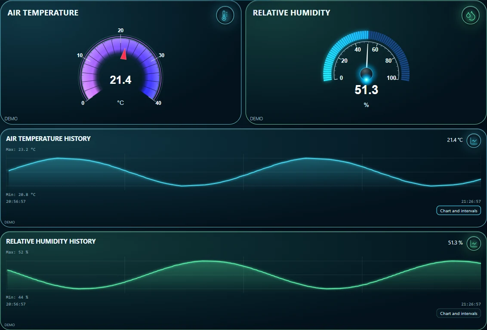
For this capture, the interface received 361 generator messages on an accelerated clock. Temperature recorded 91 points and humidity recorded 266. If both gauges read 22, inspect the JSON path on Relative humidity. If the humidity gauge changes but its chart stays empty, check the chart's tag and the recording policy on Relative humidity. If both gauges are empty, first check for a fresh message in MQTT search.